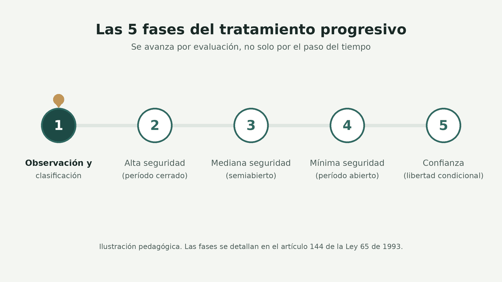
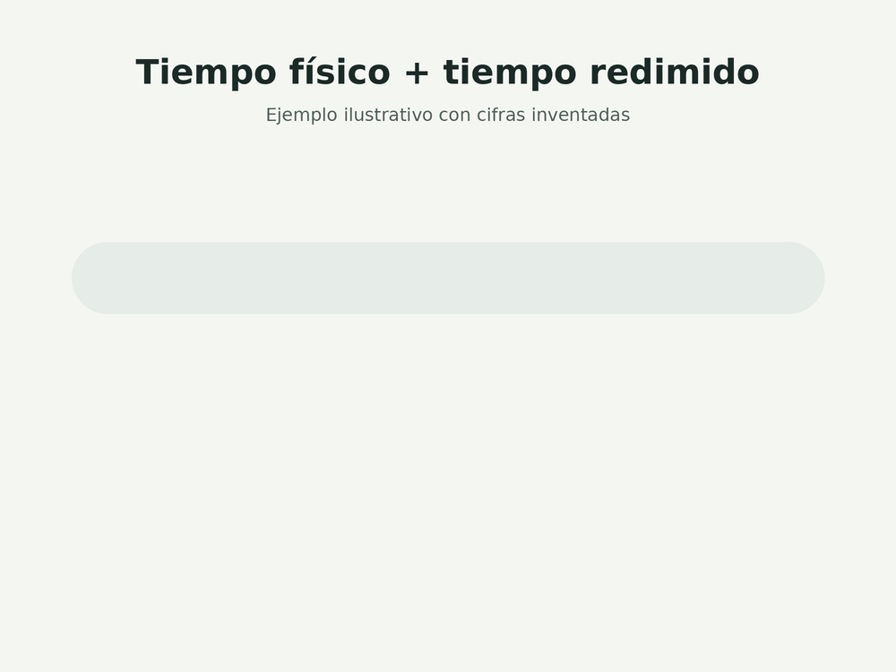
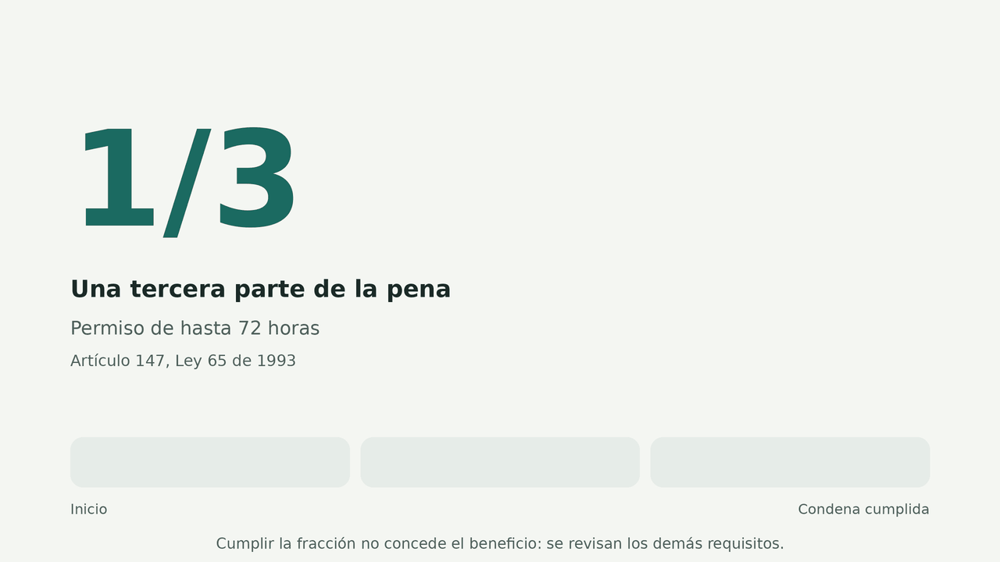
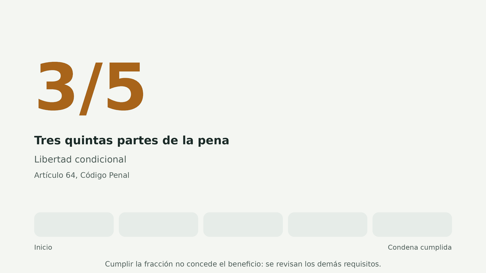
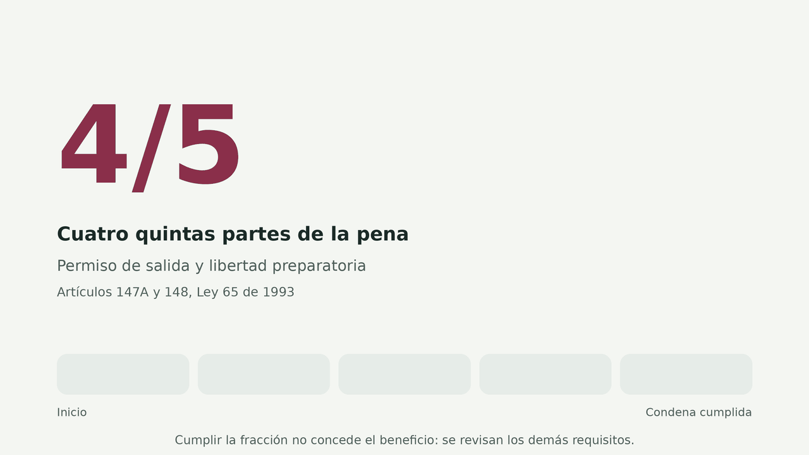
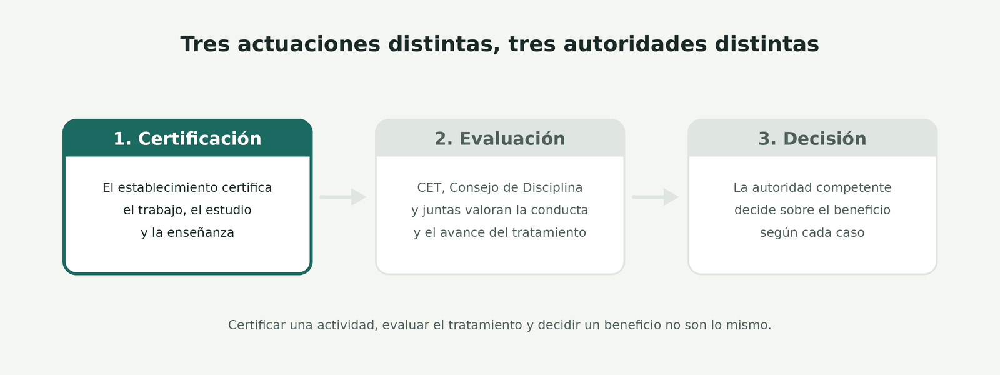
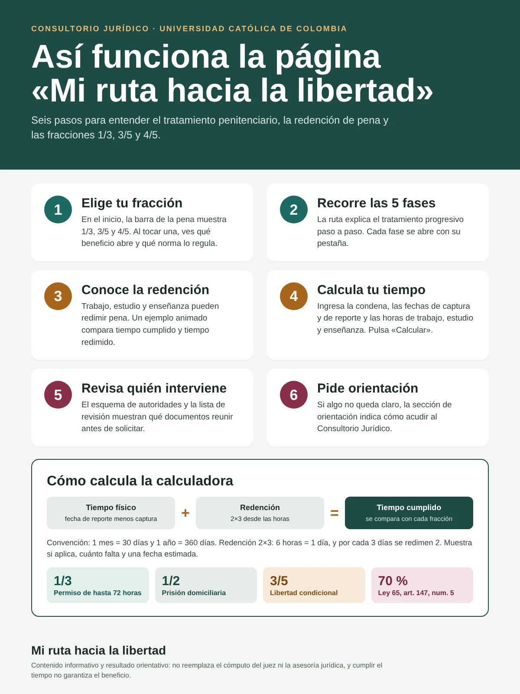

Este sitio orienta, no decide. Ningún beneficio es automático y esta información no reemplaza la asesoría de un abogado.
Empieza aquí
Elige por dónde empezar
No tienes que leerlo todo de corrido. Cada parte se entiende sola, y juntas muestran cómo se conectan las fases, la redención, el tiempo cumplido y los requisitos de cada beneficio.
Las fases del tratamiento: dónde estás y hacia dónde vas
El tratamiento progresivo busca preparar a la persona para volver a la vida en libertad, con seguimiento y evaluación continua. Pasar de una fase a otra no ocurre solo porque pase el tiempo: depende de criterios que se evalúan.
Observación, diagnóstico y clasificación
Finalidad y objetivos del régimen
Se conoce a la persona y se define su plan de tratamiento.
Participación de la PPL
Compromiso con las actividades de tratamiento: trabajo, estudio y enseñanza.
Intervención institucional
El Consejo de Evaluación y Tratamiento (CET) y las instancias encargadas del seguimiento y la valoración.
Alta seguridad · período cerrado
Finalidad y objetivos del régimen
Tratamiento con mayor control y seguimiento. Es el período cerrado.
Participación de la PPL
Compromiso con las actividades de tratamiento: trabajo, estudio y enseñanza.
Intervención institucional
El CET evalúa y hace seguimiento. El paso a otra fase depende de criterios reglamentarios previamente establecidos.
Mediana seguridad · período semiabierto
Finalidad y objetivos del régimen
Más participación en actividades de tratamiento. Es el período semiabierto.
Participación de la PPL
Compromiso con las actividades de tratamiento: trabajo, estudio y enseñanza.
Intervención institucional
El CET evalúa y hace seguimiento de manera continua.
Mínima seguridad · período abierto
Finalidad y objetivos del régimen
Preparación gradual para la vida en libertad. Es el período abierto.
Participación de la PPL
Compromiso con las actividades de tratamiento: trabajo, estudio y enseñanza.
Intervención institucional
El CET evalúa y hace seguimiento de manera continua.
Confianza
Finalidad y objetivos del régimen
Fase final del proceso de resocialización. Coincide con la libertad condicional.
Participación de la PPL
Compromiso con las actividades de tratamiento: trabajo, estudio y enseñanza.
Intervención institucional
El CET evalúa y hace seguimiento de manera continua.

Saber en qué fase estás clasificado te ayuda a entender cuánto pesan tus actividades de tratamiento y cómo influye esa clasificación en los requisitos de cada beneficio. Las cinco fases siguen el artículo 144 de la Ley 65 de 1993. Por confirmar
Después: la redención
Redención de pena: cómo cuentan el trabajo, el estudio y la enseñanza
No es lo mismo el tiempo que una persona lleva privada de la libertad que el tiempo que la ley reconoce por trabajar, estudiar o enseñar. Aquí se explica la diferencia.
Trabajo
Actividades laborales que pueden reconocerse para redención, y la importancia de su certificación y evaluación conforme a las reglas vigentes.
Estudio
Participación en actividades educativas y condiciones que deben cumplirse para que puedan reconocerse.
Enseñanza
Posibilidad de que ciertas actividades de instrucción o enseñanza se reconozcan según las disposiciones penitenciarias aplicables.
No basta con haber participado
Los registros, las certificaciones y los procedimientos de reconocimiento importan. Además de participar en una actividad, deben verificarse las condiciones legales y administrativas correspondientes.
Tiempo cumplidoLos días que la persona ha permanecido físicamente privada de la libertad.
Tiempo redimidoEl tiempo que la ley reconoce por trabajo, estudio o enseñanza debidamente certificados.
24 meses físicos
6 redimidos
Los ejemplos de este sitio son pedagógicos. No son cálculos definitivos: el cómputo de la pena se verifica caso por caso, con la normativa vigente.

Lo central: las fracciones
¿Qué significan 1/3, 3/5 y 4/5 de la condena?
Cada fracción se relaciona con un beneficio distinto y con condiciones propias. Compáralas con calma: no son etapas que se cumplan siempre en el mismo orden.

1/3
Una tercera parte de la pena: permiso de salida de hasta 72 horas
Qué significa
Haber descontado la tercera parte de la pena impuesta. Es un requisito, no el único.
Beneficio relacionado
Permiso de hasta 72 horas para salir del establecimiento, sin vigilancia.
Otros requisitos
Los demás del artículo 147 y su reglamentación, como la fase del tratamiento y la conducta. Por confirmar
Documentos útiles
Cómputo de la pena y redenciones, certificado de conducta, concepto del Consejo de Disciplina o del CET. Por confirmar
Quién interviene
La Dirección del INPEC, a través del establecimiento.
Qué puede impedirlo
Restricciones legales según el delito, órdenes de captura y mala conducta en permisos anteriores, que puede suspender los permisos hasta por seis meses.
Norma: Ley 65 de 1993, artículo 147

3/5
Tres quintas partes de la pena: libertad condicional
Qué significa
Haber cumplido las tres quintas partes de la pena.
Beneficio relacionado
Libertad condicional, que el juez concede o niega tras valorar el caso.
Otros requisitos
Adecuado desempeño y comportamiento durante el tratamiento, arraigo familiar y social, y las condiciones sobre reparación a la víctima.
Documentos útiles
Cómputo de la pena y redenciones, concepto del Consejo de Disciplina, soportes de arraigo. Por confirmar
Quién interviene
El juez de ejecución de penas y medidas de seguridad. El establecimiento aporta la documentación.
Qué puede impedirlo
Un concepto desfavorable del Consejo de Disciplina, la falta de arraigo o no cumplir lo exigido sobre la víctima.
Norma: Código Penal, artículo 64, modificado por el artículo 30 de la Ley 1709 de 2014

4/5
Cuatro quintas partes de la pena: permiso de salida de hasta 15 días y libertad preparatoria
Qué significa
Haber cumplido las cuatro quintas partes de la condena. No abre la libertad de forma automática.
Beneficio relacionado
Permiso de salida sin vigilancia por 15 días continuos, hasta 60 días al año, para quien ya se negó la libertad condicional. También la libertad preparatoria para trabajar.
Otros requisitos
Buena conducta certificada por el Consejo de Disciplina y no tener orden de captura vigente. La libertad preparatoria exige además que el sistema progresivo lo permita.
Documentos útiles
Certificado de conducta, cómputo de la pena, constancia sobre órdenes de captura. Por confirmar
Quién interviene
El Director Regional del INPEC en el permiso de salida. En la libertad preparatoria, el Consejo de Disciplina y el Director del INPEC.
Qué puede impedirlo
Mala conducta o retraso al volver de un permiso, que lo suspende seis meses, o de forma definitiva si se comete otro delito o una contravención especial de Policía.
Norma: Ley 65 de 1993, artículos 147A y 148
Alcanzar una fracción no concede el beneficio. La concesión depende del análisis individual del caso, de los requisitos legales vigentes y de la valoración de las autoridades penitenciarias y judiciales competentes.
Haz la cuenta
Calculadora de tiempo cumplido
Con la condena, las fechas y las horas de trabajo, estudio y enseñanza, estima cuánto tiempo lleva cumplido y cuánto falta para 1/3 (72 horas), 1/2 (domiciliaria), 3/5 (libertad condicional) y 70 %. Solo mide el tiempo: no decide si procede un beneficio.
Probar con un caso de ejemplo (datos inventados):
Cómo se calcula: la condena se pasa a días (mes de 30 días, año de 360). El tiempo físico es la fecha de reporte menos la de captura. La redención sale de las horas: días equivalentes = horas ÷ 6 (parte entera) y días redimidos = (días equivalentes ÷ 3, parte entera) × 2. El tiempo cumplido es el físico más lo redimido, y cada fracción se redondea al día más cercano. Se basa en la Ley 2466 de 2025 y el fallo STP5152-2026, según el cómputo entregado. Por confirmar
Antes de pedir nada
¿Qué debo revisar antes de solicitar un beneficio?
Cumplir una fracción no lo es todo. Se revisan juntas varias condiciones jurídicas y administrativas, y esta lista te ayuda a no dejar ninguna por fuera.
Quién hace qué
¿Quién certifica, quién evalúa y quién decide?
Certificar una actividad, evaluar el tratamiento y decidir sobre un beneficio son cosas distintas, y cada una la hace una autoridad diferente según el beneficio.
Certificación de actividades
El establecimiento certifica las actividades de trabajo, estudio o enseñanza.
→
Evaluación y seguimiento
Las instancias penitenciarias valoran la conducta y el avance del tratamiento: Consejo de Evaluación y Tratamiento (CET), Consejo de Disciplina y junta de evaluación de trabajo, estudio y enseñanza.
→
Decisión sobre el beneficio
Decide la autoridad competente según el beneficio: el juez de ejecución de penas y medidas de seguridad (libertad condicional) o el INPEC (permisos y libertad preparatoria).

Este esquema muestra pasos generales de orientación y no sustituye las reglas procesales específicas de cada caso.

Para llevar en papel
La infografía, para llevarla contigo
La página explica con detalle; la infografía lo resume en una sola hoja para consultarla rápido y recordar la ruta general. Tiene cinco bloques:
1El tratamiento penitenciario y sus fases.
2La redención de pena: trabajo, estudio y enseñanza.
3Las fracciones de 1/3, 3/5 y 4/5 y sus beneficios.
4Requisitos que deben verificarse.
5Orientación y consulta, con las referencias normativas.
De dónde sale todo
Las normas que respaldan esta información
Cada explicación se apoya en estas fuentes. Las dejamos aparte para que puedas revisar la norma directamente.
1993
Ley 65 de 1993
Código Penitenciario y Carcelario.
Art. 144 · fases del tratamiento Por confirmar
Art. 147 · permiso de hasta 72 horas (1/3)
Art. 147A · permiso de salida de hasta 15 días (4/5)
Art. 148 · libertad preparatoria (4/5)
2000
Ley 599 de 2000
Código Penal.
Art. 64 · libertad condicional (3/5), modificado por el art. 30 de la Ley 1709 de 2014
2014
Ley 1709 de 2014
Reformó artículos de la Ley 65 de 1993 y del Código Penal, incluido el artículo 64.
Jurisprudencia: sentencia C-757 de 2014 Completar
Orientación y consulta
¿Tienes dudas sobre tu situación o el procedimiento?
Verifica tu situación jurídica individual y pide orientación cuando existan dudas sobre los requisitos. Este sitio no reemplaza el estudio de cada caso ni la decisión de las autoridades.